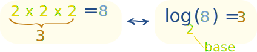
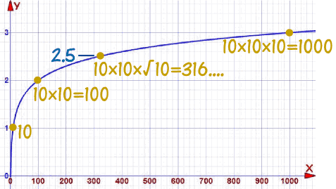

Logarithms Can Have Decimals
On Introduction to Logarithms we saw that a logarithm answers questions like this:
How many 2s do we multiply to get 8?
Answer: 2 × 2 × 2 = 8, so we needed to multiply 3 of the 2s to get 8
So the logarithm is 3
And we write "the number of 2s we multiply to get 8 is 3" as
log2(8) = 3
So these two things are the same:
Example: What is log10(100) ... ?
10 × 10 = 100
Multiplying 2 10s together makes 100, so:
log10(100) = 2
Note: using exponents it is: 102 = 100
But now we ask a new question:
Example: What is log10(300) ... ?
10 × 10 = 100
10 × 10 × 10 = 1000
Oh no! We are either too low or too high.
So multiplying two 10s is not enough, but multiplying three 10s is too many ...
... but what about two and a half ... ?
Half a Multiply ...
How can we do half a multiply?
Well, half a multiply is something we need to do twice to make a whole multiply.
And that is square root !
√10 × √10 = 10
Multiplying by a square root is like doing half a multiply.
So let us try that:
Example: log10(300) (continued)
Try using 10 in a multiplication two and a half times:
10 × 10 × √10
=
10 × 10 × 3.16...
= 316....
We are close to 300, so we could say:
log10(300) ≈ 2.5 (approximately)
In other words using 10 in a multiplication two and a half times gets approximately 300.
(Note: using exponents we can say 300 ≈ 102.5)
And this is what it looks like on a graph:

2: 10 × 10 = 100
2.5: 10 × 10 × √10 = 316....
3: 10 × 10 × 10 = 1000
So logarithms aren't just whole numbers like 2 or 3: we found a value at 2.5,
We can find more values (using cube roots, fourth-roots etc) like 2.75, or 1.9055, and so on.
But we don't have to use square roots etc to find logarithms, because ...
... in practice it is easier to use a calculator!
Just Use A Calculator
 |
For example the "log" button will give the "base 10" logarithm. |
Example: Using the calculator, what is log10(300) ?
Get your calculator, type in 300, then press log
Answer: 2.477...
That means that we need to use 10 in a multiplication 2.477... times to make 300:
log10(300) = 2.477...
Our earlier estimate of 2.5 wasn't too bad, was it?
Note: using exponents it is: 102.477... = 300
Example: What is log10(640) ?
Get your calculator, type in 640, then press log
Answer: 2.806...
That means that we need to use 10 in a multiplication 2.806... times to make 640:
log10(640) = 2.806...
Have a look at the graph above, and see what value you get at x=640
Note: using exponents it is: 102.806... = 640
So there you have it ... logarithms (that tell us how many times to use a number in a multiplication) can have decimal values.